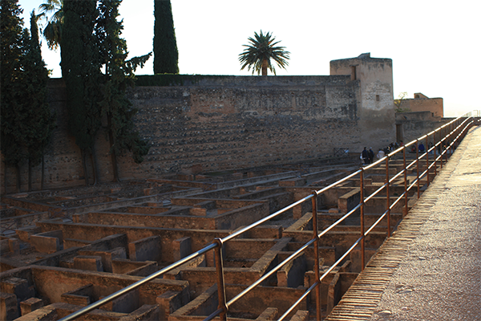

We visited The Alhambra in Granada, which is a palace and fortress complex. Its one of the most famous monuments of the Islamic architecture and one of the best preserved places of the historic Islamic world.

Fig. 1 - The Alcazaba. A fortress at the western tip of the Alhambra. It is the oldest surviving part of the Alhambra, having been built by Muhammad I Ibn al-Ahmar, the founder of the Nasrid dynasty, after 1238 Fig. 2 - View from the fortress at The Alcazaba.Fig. 3 - Highest tower in The Alcazaba.